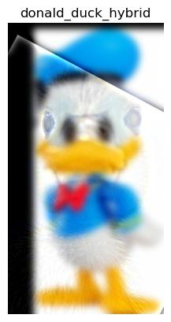

The gradient magnitude measures the rate of intensity change in an image. It is calculated using finite difference operators (Gx and Gy) to estimate horizontal and vertical changes. The results are combined using the Euclidean norm to highlight edges. Binarization can then be applied to create a binary representation of detected edges.
Original Image - Cameraman
Gx | Gy
Gm | Gm - Binarized

Blurred Image
Blurred Gx | Gy
Blurred Gm | Gm - Binarized

Differences Observed
Applying a Gaussian filter before using the finite difference operator creates a blurred version of the image, which reduces noise. This smoothing results in cleaner gradient images, allowing for sharper edge detection and a more accurate representation of the image's features.
Using Derivative of Gaussian Filters
By convolving the Gaussian filter with the derivative operators Dx and Dy, we create Derivative of Gaussian (DoG) filters. DoG simplifies the process by combining smoothing and differentiation into one step.
Verification of Results
The resulting gradient images from the DoG filters closely resemble those from the two-step process.
Derek Nutmeg Hybrid
Donald
Duck

Donald and Duck Hybrid - Failure

Lion
Zebra
Lion and Zebra Hybrid
Bells & Whistles
I experimented with using color to enhance the effect. In my tests, applying color to both the high-frequency and low-frequency components produced the best results, providing a more detailed representation of the image.